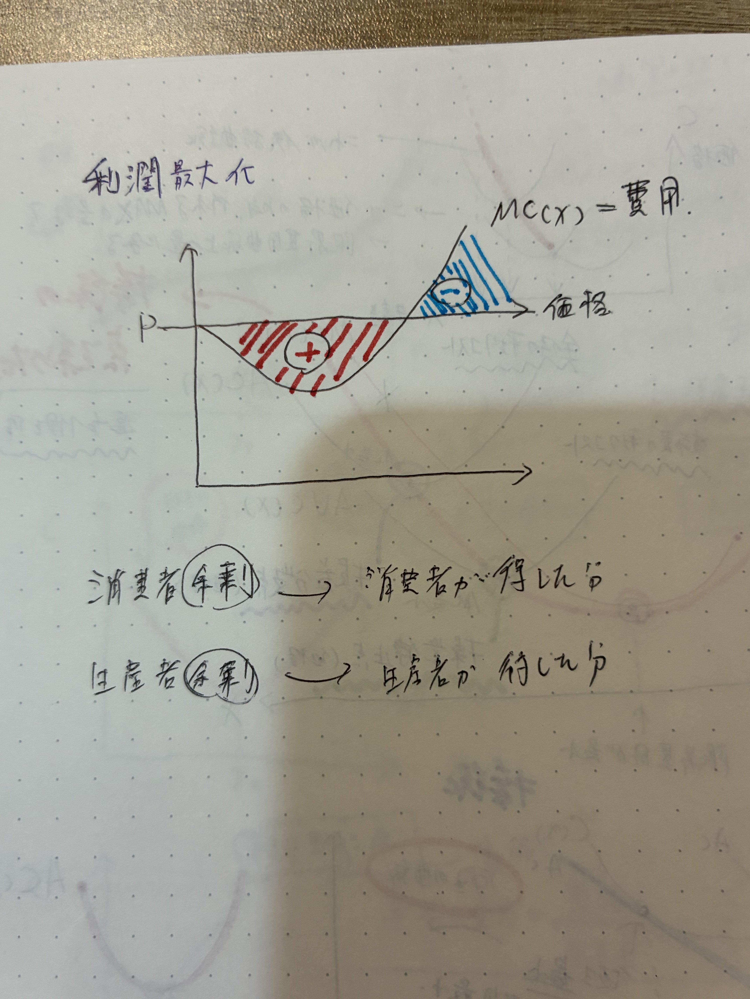
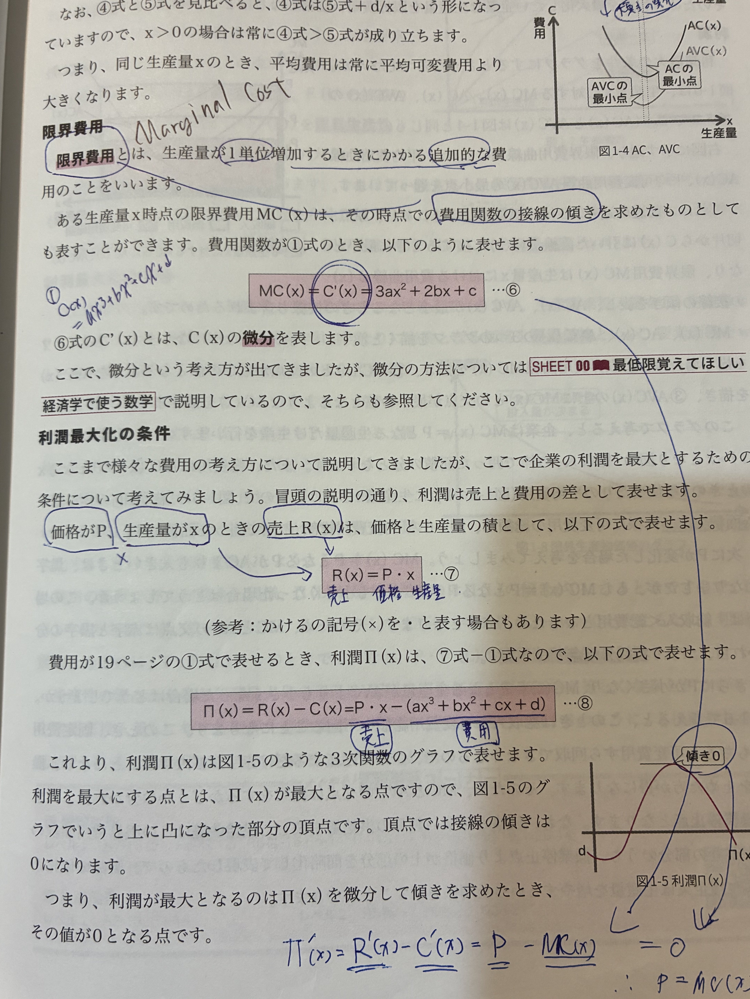
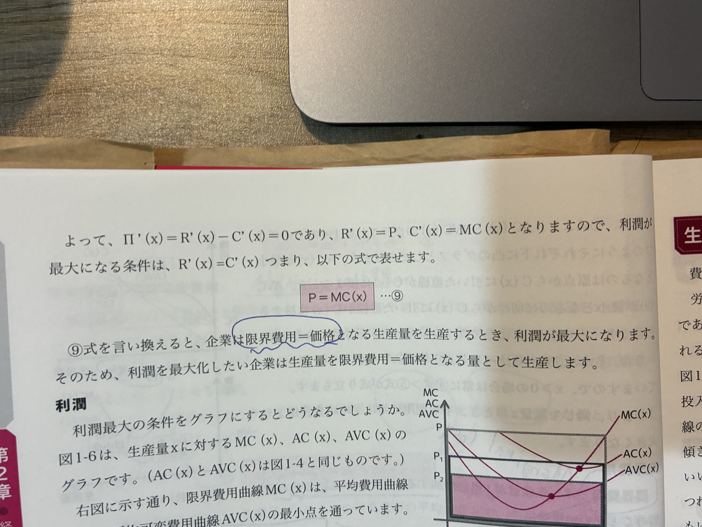
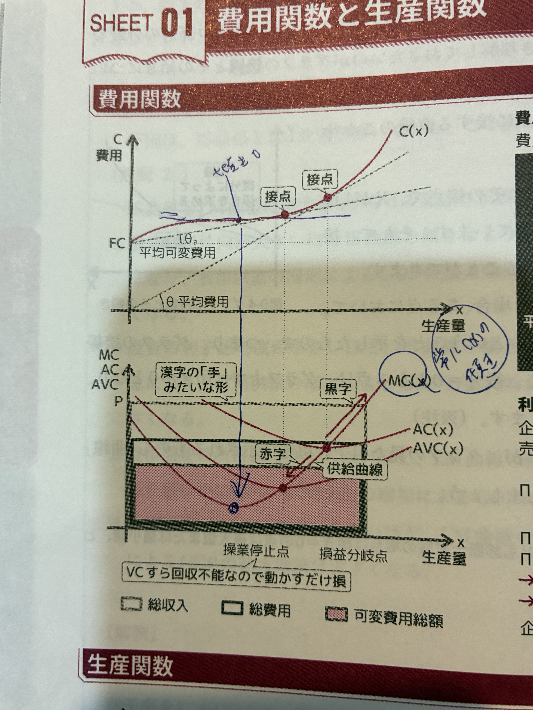

R(x) = P·x なので R'(x) = P。
π'(x) = R'(x) − C'(x) = P − MC(x) = 0
各価格Pに対して、企業は P=MC を満たす生産量を選ぶ。
→ MC曲線そのものが供給曲線になる。
ただし、P<AVC最小値 では操業停止（生産量0）。

| P と AC の関係 | 状態 | 理由 |
|---|---|---|
| P > AC最小値 | 黒字（利潤プラス） | 1個あたり総費用を超える価格 |
| P = AC最小値 | 損益分岐 | 利潤ゼロ（操業継続） |
| AVC最小 < P < AC最小 | 赤字でも操業 | FCの一部を回収できる |
| P < AVC最小値 | 操業停止 | VCすら回収不能 |

| 状態・点 | 収益（売上）でカバーできている範囲 | 経営上の意味（どんな状態？） |
|---|---|---|
| 限界費用 MC 最小点 （MCの底） |
「追加の1個」を最も安く作れている状態（売上1個あたりの粗利が最も拡大する瞬間）。 ※ただし、材料費などの直接的な費用は 一部のみ を賄えている状態。 |
費用の増え方が最小になる点（生産効率MAX）。習熟効果などで効率が上がりきった状態。ここを過ぎると、設備や人手の限界で1個あたりの追加コストが増え始める。 |
| 操業停止点 P=AVC最小 （黄信号の境界） |
「材料費などの直接的な費用」だけを賄えている。家賃などの 固定費は全く賄えていない。 | 会社を動かす「最低限の条件」。これより売上が低いと、材料費すら一部しか賄えず、作れば作るほど赤字が膨らむため 即座に休業すべき。 |
| 損益分岐点 P=AC最小 （プラス転換ライン） |
「すべての費用（材料費＋家賃など）」を賄えている。 赤字も黒字もない トントンの状態。 |
「利益が0」になる目標地点（固定費を賄える点）。ようやく固定費を全て回収できた瞬間。ここから先が本当の「儲け」 になり、経営が安定し始める境界線。 |